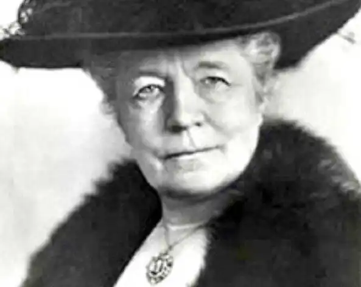

ЛАҐЕРЛЕФ, Сельма Оттілія Лувіса (Lagerlof, Selma Ottiliana Lovisa — 20.11. 1858, Морбакка — 16.03. 1940, там само) — шведська письменниця, лауреат Нобелівської премії 1909 р.
Лаґерлеф народилася в сім'ї власників маєтку Морбакка у провінції Вермланд. її батько був відставним військовиком, мати — вчителькою. Змалку вона поринула у світ народних казок і легенд, які розповідали їй та її братам і сестрам бабуся та няня. Сельма була особливо уважною слухачкою, оскільки у три роки її розбив параліч, і вона не могла гратися, як усі діти. Лише після тривалого лікування у шпиталі Стокгольма 1867 р. Їй повернули здатність рухатися. Вона пристрасно захоплювалася книжками: читала шведів Е. Теґнера, К. М. Бельмана, данця Г. К. Андерсена, англійців В. Скотта й Т. Майн Ріда. Їхні твори переносили її у чарівний світ вимислу. Про своє життя та захоплення вона писала в новелі "Казка про казку" ("En saga om en saga", 1908), де помітний вплив Г. К. Андерсена, який назвав книгу про себе "Казка мого життя", у книгах "Морбакка" ("Marbacka", 1922), "Мемуари дитини" ("Ettbams memoarer", 1930), "Щоденник" ("Dagbok", 1932).
Письменниця зізнавалась, що бажання присвятити себе літературі виникло в неї ще у семилітньому віці; їй все здавалося, що прийде хтось розумний і добрий, хто прочитає написане нею і видасть. Але складні умови життя, розорення сім'ї, якій довелося продати Морбакку, змусили її вступити в Учительську семінарію (1882— 1885), закінчивши яку вона стала працювати в школі у невеличкому селищі Ландсткруна (1885—1895). Усі ці роки вона намагалася писати. Але це був час панування у літературі реалізму, а ті враження, які тіснилися в її голові, не вкладалися в жорсткі рамки реалістичного аналізу сучасності. Але якось Лаґерлефдала собі волю та написала дві новели, у яких оповідь набула романтичної яскравості, емоційної насиченості, ідо них увійшов той елемент фантастики, який зберігся у її свідомості під впливом казок, що їх вона почула в дитинстві і які жили усі ці роки в її душі. У 1890 р. газета "Ідун" оголосила конкурс на кращу новелу. Лаґерлеф вирішила взяти участь, але важко було знайти час, вільний від занять, а тут ще їй довелося поїхати в гості, й лише за останню ніч оголошеного терміну вона зуміла завершити розпочате. Несподівано для самої себе вона здобула першу премію і пропозицію продовжити працю. Друзі дали їй пристановище і звільнили від тягаря вчительської праці. Так вона змогла завершити розпочате, і 1891 р. з'явився її перший і найзнаменитіший твір "Сага про Єсту Берлінґа" ("Gosta Berlings saga"). Назвати ці 36 новел, об'єднаних образом головного героя, позбавленого сану священика Єсти Берлінґа, романом неможливо — це відтворення минулого Швеції, в якому органічно поєднуються реальність і казковий колорит з усіма його надприродними подіями. Це дійсно сага — сказання. Сам образ головного героя трансформувався з оповіді батька письменниці про якогось молодика, надзвичайно веселого, здатного розважити будь-яку компанію, чарам якого не могла протистояти жодна жінка; згодом він став пастором. У письменниці він отримав своє ім'я, а його пасторська кар'єра розпочалася ще до перших сторінок "Саги". На перших сторінках Єста постає пастором-п'яницею, котрому доводиться самому покинути свою парафію, він опускається до того, що пропиває санчата з мішком борошна, довірені йому голодною дитиною. Протверезівши, обдертий, без копійки в кишені, голодний, герой розуміє, що мусить сам себе стратити за цей непрощенний злочин: лягає в замет, аби там замерзнути. Його вирятовує майорша з Екебю — найбагатша і найвладніша жінка в околиці. Він поселяється в неї у т. зв. "кавалерському" корпусі, де живуть пани, які з тих чи інших причин опинилися на маргінесі життя. Майорша дає їм прихисток, їжу й одяг. Кожен з її кавалерів — особистість, у кожного є своє нереалізоване покликання. Але жодною працею вони не можуть займатися — лише танцювати на балах, якщо ще зберегли силу, розповідати цікаві історії, а то й просто дурити наївних мешканців околиці. Над усіма верховодить Єста. Дія починає стрімко розгортатися з тієї миті, коли у різдвяну ніч до кавалерів приходить нечистий і вони вирішують за його намовою прогнати з Екебю майоршу і заправляти усім самим. Єста підписує своєю кров'ю договір із чортом. "Сага" розповідає тепер про спокуту, якої зазнає сама майорша, про непросте вирішення питання про вину і каяття, про відповідальність і марнотратництво, про важку працю і тих, хто своїм неробством позбавляє простий люд заробітків. Кавалери, які запанували в Екебю, розорили всю околицю, зупинили працю на всіх заводах і кузнях, нечувана посуха зробила ще гіршим становище простих людей, які вирішили знищити непутящих кавалерів. Складно і водночас логічно розкривається характер Єсти у різних ситуаціях: здавалося би, непутящий гультяй стає носієм і захисником справедливості. Письменниця показує, яку Єсті росте почуття відповідальності не лише за себе, а й за свій край, свій народ. Чимало сторінок "Саги" присвячено прекрасним жінкам, "ніжним, як білченята", здатним запалити у чоловіках пристрасне почуття і готових до самопожертви. Кохання в цьому романі спочатку виникає як легка гра, завдячуючи Єсті, але завжди набуває високого гуманістичного звучання. В основі цього твору лежить ідея милосердя: на питання про те, яка її улюблена чеснота, Лаґерлеф відповідала: милосердя. Але милосердя в неї обов'язково поєднується з працею. У фіналі Єста від імені всіх кавалерів відрікається від можливості бути спадкоємцями майорші Екебю, адже неробство знову розбестить їх усіх. Він обрав для себе можливість трудитися на своєму маленькому наділі, а для своєї дружини, колишньої графині, — лікувати навколишніх мешканців. Друга найголовніша думка письменниці теж знаходить відображення в усіх ситуаціях твору: вона вважала, що найбільшим нещастям є здатність чи можливість ранити почуття інших людей. Більшої уваги до людського почуття, до його вразливості, аніж у "Сазі", важко віднайти у світовій літературі. Можливо, через це та ще й тому, що світ природи в ній так само одухотворений, як і людський, "Сага" стала одним із найвідоміших творів кінця XIX ст. Своєрідні не лише мова та колорит "Саги" — незвичний спосіб змалювання характерів. Письменниця не досліджує їх, виникають лише ніби шкіци чи образи далекого минулого, закриті пеленою часу, що спливають у свідомості оповідачки. Але це не вада, а в дусі часу апеляція до творчого сприйняття твору читачем. Із "Сагою" Лаґерлеф у шведській літературі утвердився неоромантизм, а в духовному житті ще раз заявив про себе християнський гуманізм, у дусі якого вирішуються найскладніші та нерозв'язні в реальності суперечності. "Сагою" не вичерпалися історії про кавалерів — письменниця ще неодноразово зверталася до них у своїх новелах, що долучаються до головного твору. Становище бідняків рідного Вермланда, та й усієї Швеції, змусило письменницю пильніше придивитися до ідей соціалізму. Роман "Чудеса Антихриста" ("Antikrisis mirakler", 1897) поєднує ідеї християнського гуманізму із соціалізмом, але успіху твір не мав ніде. Безрадісна доля селян-сектантів, які вірять v нове пришестя Месії, стала матеріалом роману "Єрусалим" ("Jerusalem", 1901-1902). Другим найвизначнішим і унікальним твором Лаґерлеф стала "Чудесна мандрівка Нільса Гольгерсона з дикими гусьми по Швеції" ("Nils Holgerssons underbara resa genom Sverige", 1906— 1907), задумана як підручник для учнів першого класу. У формі, доступній для дитини, і водночас цікавій, позбавленій академічної нудьги та повчальності, письменниця розповідає про історію Швеції, її географію, етнографію, життя тваринного та рослинного світу. Усе це стало можливим завдяки тому, що наукові дані вміщені в казці про злого та лінивого хлопчика Нільса, сина незаможних селян, котрий, пожартувавши з домовика, був настільки зменшений у розмірах, що став не більшим за жабу. Трапилося це напровесні, коли над будинком Нільса пролітали дикі гуси і до них вирішив пристати домашній гусак Мартін, вчепившись за шию котрого і намагаючись затримати його вдома, вирушив у подорож і сам Нільс, анітрохи того не бажаючи. Подорож завершується пізно восени. За цей час Нільс, який, ставши крихіткою, вивчивши мову всіх птахів і звірів, під керівництвом старої мудрої гуски Акки поступово доходить до розуміння того, що головним для будь-якої живої істоти, і для людини особливо, є турбота про інших і допомога іншим. Жорстокий і лінивий хлопчина, котрий раніше із задоволенням висмикував з-під матері, котра доїла корову, ослін чи тягнув за хвіст кота, всі літні місяці лише тим і займається, що рятує кого-небудь із звірів чи птахів. І відбувається це не тому, що йому так велять робити, а тому, що інакше він просто не може чинити, бо бачить навколо себе саме таке ставлення всіх добрих звірів і птахів до всіх інших звірів і птахів. Не роздумуючи про це, він починає сприймати турботу про інших і допомогу іншим як щось само собою зрозуміле. Моральне переродження Нільса відбувається одночасно з тим, як він дедалі більше дізнається чимало цікавого про свою країну та свій народ. Книга спричинила бурхливу полеміку, деякі критики вважали її шкідливою, оскільки письменниця не ставила перед собою завдання виховання людини в дусі християнської релігії, вона наділяла тварин невластивими для них рисами, погрішила десь проти точних наукових даних. Але самі діти високо оцінити її твір, а влітку 1907 р. після виходу друком книги Лаґерлеф обрали членом Упсальського університету, 1909 р. вона стала лауреатом Нобелівської премії, а 1914 р. була удостоєна честі стати одним із вісімнадцяти членів Шведської Академії. Письменниця важко пережила події Першої світової війни, відгукнувшись на них романом "Вигнанець"("Bannlyst", 1918). 1914 р. вона знову звернулася до життя простого народу Швеції, дослідивши психологію селянина в романі "Король Португалії" ("Kejsaren av Portugallien"). За глибиною психологічного аналізу роман порівнювали з романами Ф. Достоєвського. Найвизначнішою в пізній творчості Лаґерлеф стала трилогія про Левеншельдів — "Перстень Левеншельдів" ("Lowenskoldskaringen", 1925), "Шарлотта Левеншельд" (1925), "Анна Сверд" ("Anna Svard", 1928) — історичний роман про п'ять поколінь. Йдучи в руслі європейської літератури кін.